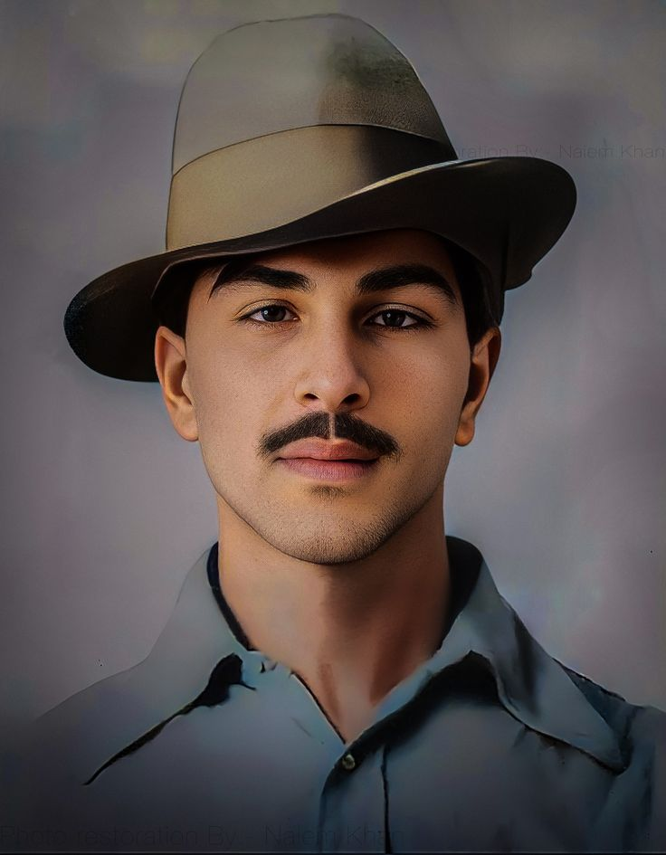

Known for his fierce patriotism, Bose led the Indian National Army (INA) and sought international support to overthrow British rule in India.

Bhagat Singh
Bhagat Singh was a revolutionary socialist who played a pivotal role in the Indian independence movement and was executed at the age of 23.
Mahatma Gandhi
Known as the "Father of the Nation," Mahatma Gandhi pioneered the philosophy of nonviolent resistance (satyagraha) and led India to independence from British rule.
Bal Gangadhar Tilak
Tilak was a prominent leader in the Indian independence movement and famously proclaimed, "Swaraj is my birthright and I shall have it."
Sardar Vallabhbhai Patel
Known as the "Iron Man of India," Patel was instrumental in the political integration of over 500 princely states into the Indian Union.
Jawaharlal Nehru
Nehru was the first Prime Minister of independent India and a central figure in Indian politics both before and after independence.
Chandra Shekhar Azad
Azad was a revolutionary who reorganized the Hindustan Socialist Republican Association (HSRA) after the capture of its founder, Ram Prasad Bismil.